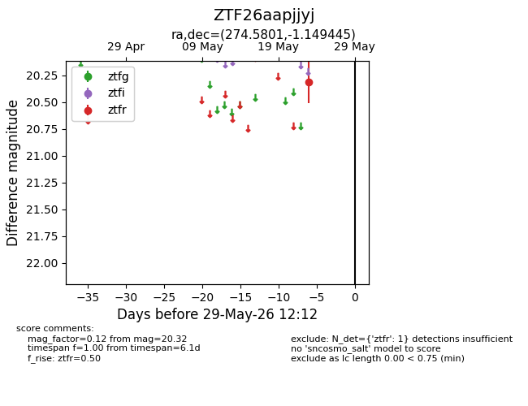
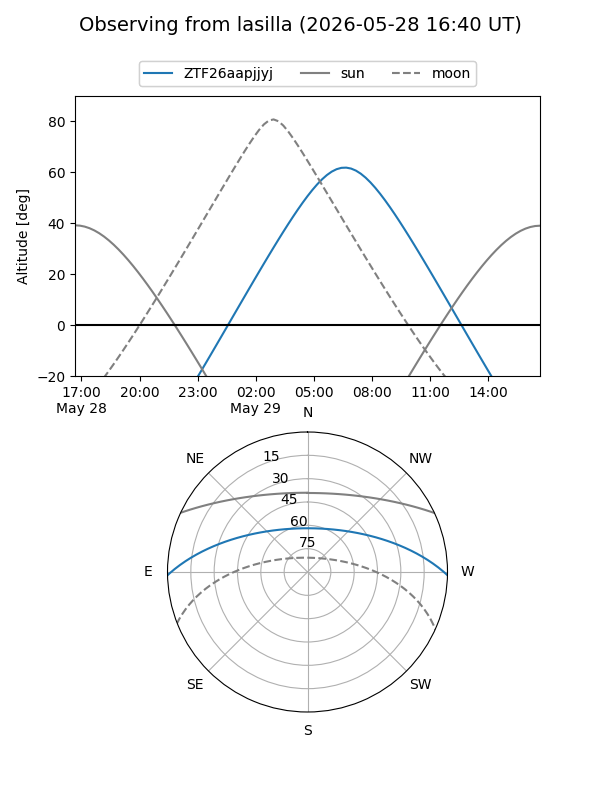
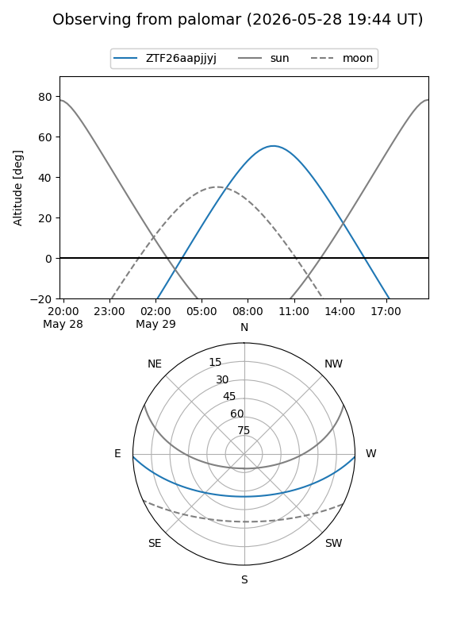

ZTF26aapjjyj
Target ZTF26aapjjyj at 2026-05-29 12:16
Aliases and brokers:
lsst-FINK: link
lsst-Lasair: link
lsst-ALeRCE: link
ztf-FINK: link
ztf-Lasair: link
ztf-ALeRCE: link
alt names
ZTF26aapjjyj (ztf,fink_ztf)
Coordinates:
equatorial (ra, dec) = 274.5801,-1.14945
equatorial (HMS+DMS) = 18:18:19.23,-01:08:58.00
galactic (l, b) = (28.1077,+6.83351)
Flags:
Photometry:
last ztfr=20.32
1 ztfr detections
Lightcurve

Visibility


Additional plots